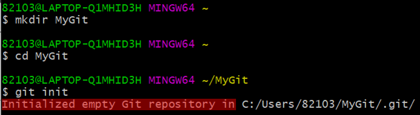
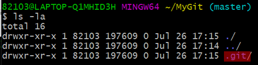
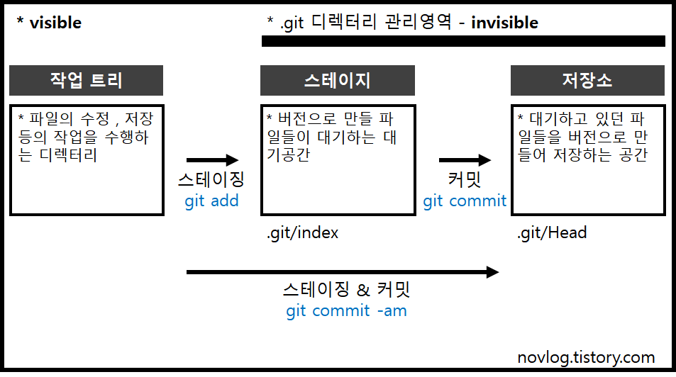

* 다음 포스팅은 깃(Git)의 사용방법에 대하여 정리한 것으로, 개인적인 공부 기록용으로 작성한 글 이기에 잘못된 내용을 포함하고 있을 수 있습니다.
* Window 운영체제를 기준으로 작성했습니다.
[목차]
#1 깃 초기화 - git init
#2 전체 개요
[Goal]
* 깃 저장소를 만드는 방법에 대한 이해
* 작업 트리 , 스테이지, 저장소의 관계에 대한 내용 이해
... BEFORE START
이번 포스팅 부터 여러 편에 걸쳐 깃(Git)을 이용해 버전 관리를 하는 방법에 대해서 정리 하고자 한다. '버전' 이란 특정 문서를 수정 혹은 저장할 때마다 생기는 것으로 번호 등을 통해 구별된 것이다.
이렇게 생성된 버전들의 시간과 수정 내용 등을 기록할 수 있는 것을 버전 관리 시스템 이라고 부르는데, 깃이 바로 대표적인 버전 관리 시스템 중 하나이다.
#3 깃 버전 관리 VOL1 포스팅 에서는 깃 저장소를 만드는 방법과 , 전체적인 개요에 대해서 설명할 예정이다.
#1 깃 초기화 - git init
버전 관리를 하고 싶은 디렉터리로 이동해서 깃을 초기화 하면, 그때부터 해당 디렉터리에 있는 모든 파일들을 버전 관리할 수 있다. 깃을 초기화 하는 명령은 "git init" 이다.
홈 디렉터리에서 MyGit 디렉터리를 생성하고 , MyGit 디렉터리로 이동해 git init 명령을 실행한다.

Initialized empty Git respository in .. 파일 경로 메시지가 출력되면 해당 폴더를 깃으로 관리할 수 있다.
ls - la 명령을 입력해 MyGit 디렉터리 안에 숨겨진 파일들을 모두 출력해 보자.

".git" 이라는 디렉터리가 생성된 것을 확인할 수 있는데, 이는 버전이 저장될 "저장소(Repositiry)" 이다. 저장소에 대해서는 바로 다음에 설명 하도록 하겠다.
#2 전체 개요

위의 그림을 참고해 깃에서 버전을 만드는 단계를 이해해 보도록 하자.
깃의 버전 관리 단계는 "작업 트리" "스테이지" "저장소" 3가지 단계로 나뉜다.
* 작업 트리 : 파일의 수정 혹은 저장 등의 작업을 수행하는 디렉터리이다. MyGit 디렉터리가 작업 트리이다.
* 스테이지(stage) : 버전으로 만들 파일들의 대기하는 공간이다. 스테이징 역역(Staging Area) 라고 부르기도 한다.
* 저장소(Repository) : 스테이지에서 대기중이던 파일들을 버전으로 만들어 저장하는 공간이다. 앞에서 확인한 .git 파일이 바로 저장소이다.
스테이지(stage)와 저장소(Repository)는 .git 디렉터리 안에 숨어있는 숨긴 파일 형태로 존재하는 영역이다. (invisible)
그래서 아까 MyGit 디렉터리 안에 .git 저장소를 확인할 때 ls - la (숨긴 파일도 함께 출력하는 옵션) 명령을 사용한 것이다. 더 자세히 말하자면 스테이지의 내용은 .git/index 파일에 저장소의 내용은 .git/HEAD 파일에 나뉘어 저장된다.
작업 트리의 파일을 스테이지 영역으로 옮기는 과정을 "스테이징" 이라고 부르며 git add 명령을 이용한다. 또한, 스테이지 영역에 존재하는 대기 파일들을 저장소로 옮기는 과정을 "커밋" 이라고 부르며 git commit 명령을 이용한다.
스테이징과 커밋을 한 번에 처리하고자 할 때는 git commit -am 명령을 이용하면 된다. (단, git commit -am 명령은 한 번이라도 커밋을 수행한 파일만 가능하다.)